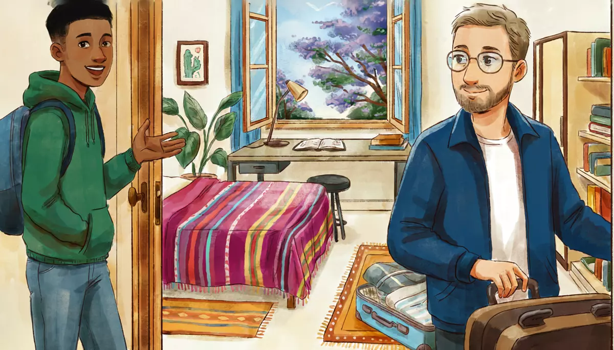

I can describe where I live in simple phrases.Goal of this lesson · CEFR Sustained monologue: describing experience A1
Paso 1 de 8
EscuchaListen
Listen to the conversation, then answer the questions.

Alex's first full day in the house. Diego shows him around. tú (Diego and Alex)
First listen without the text. Press Escuchar todo and answer the first question. Then show the Spanish text and listen again.
ChooseWhere is the washing machine?
Your answer:
D
DiegoBueno, Alex, te enseño la casa. Aquí abajo hay una sala, un comedor y una cocina.OK, Alex, I'll show you the house. Down here there's a living room, a dining room and a kitchen.
A
Alex¡Qué bonita cocina! Es muy grande.What a nice kitchen! It's very big.
D
DiegoSí, es el lugar favorito de mi abuela. Y aquí está el baño.Yes, it's my grandma's favorite place. And here's the bathroom.
A
Alex¿Hay otro baño?Is there another bathroom?
D
DiegoSí, arriba hay otro, junto a tu cuarto. Ven, vamos.Yes, upstairs there's another one, next to your room. Come on, let's go.
D
DiegoMira, este es tu cuarto. Es pequeño, pero tiene mucha luz.Look, this is your room. It's small, but it gets a lot of light.
A
AlexEstá muy bien. La cama es cómoda y hay un escritorio. ¡Perfecto para trabajar!It's really nice. The bed is comfortable and there's a desk. Perfect for working!
A
AlexOye, ¿y el wifi? ¿Cuál es la contraseña?Hey, and the wifi? What's the password?
D
DiegoEstá en el refri, en un papelito amarillo.It's on the fridge, on a little yellow note.
A
Alex¿Y dónde está la lavadora?And where's the washing machine?
D
DiegoEn la azotea. Ahí están la lavadora y el tinaco.On the roof. The washing machine and the water tank are up there.
A
Alex¿Y la colonia es tranquila?And is the neighborhood quiet?
D
DiegoSí, muy tranquila. Hay un parque, una tienda y una farmacia muy cerca. El metro está a cinco minutos.Yes, very quiet. There's a park, a shop and a pharmacy very close. The metro is five minutes away.
1
ChooseListen again and answer.
What is Alex's room like?
Where is the wifi password?
What is near the house?
Por teléfono: on the phone
That evening, Alex describes his new home to Mariana.
M
Mariana¿Y qué tal tu casa nueva?So how's your new home?
A
AlexMuy bien. Es una casa vieja, pero muy bonita. Mi cuarto es pequeño y tiene una ventana grande.Great. It's an old house, but very pretty. My room is small and has a big window.
M
Mariana¿Y la colonia?And the neighborhood?
A
AlexEs tranquila. Hay árboles, un parque y muchas tienditas.It's quiet. There are trees, a park and lots of little shops.
1
ChooseAnswer the questions: Por teléfono: on the phone
How does Alex describe the house?
Paso 2 de 8
FíjateNotice
Read how it works. Play the examples and repeat them aloud.
Hay or está?
Hay (there is / there are) says that something exists: it's used with un, una, numbers, or no article. It never changes: hay un parque, hay dos baños.
Está / están says where a specific thing is: it's used with el, la, los, las or a name. El metro está a cinco minutos.¿Dónde está la lavadora?
exists: hay
where it is: estar
Hay un baño arriba.
El baño está arriba.
Hay una farmacia cerca.
La farmacia está cerca.
Hay dos recámaras.
Las recámaras están arriba.
From the conversation:
Bueno, Alex, te enseño la casa. Aquí abajo hay una sala, un comedor y una cocina.OK, Alex, I'll show you the house. Down here there's a living room, a dining room and a kitchen.
¿Y dónde está la lavadora?And where's the washing machine?
En la azotea. Ahí están la lavadora y el tinaco.On the roof. The washing machine and the water tank are up there.
Not hay la farmacia: with el / la, use está. And not está un parque: with un / una, use hay.
Describing: adjectives agree
Adjectives usually go after the noun and match it: masculine or feminine, singular or plural. Un cuarto pequeño, una casa pequeña, dos cuartos pequeños. Adjectives ending in -e or a consonant only add -s / -es for plural: una ventana grande, dos ventanas grandes. To describe, use ser: La casa es vieja.Muy (very) never changes: muy tranquila.
masculine
feminine
small
pequeño(s)
pequeña(s)
pretty
bonito(s)
bonita(s)
old
viejo(s)
vieja(s)
big
grande(s)
grande(s)
comfortable
cómodo(s)
cómoda(s)
From the conversation:
Mira, este es tu cuarto. Es pequeño, pero tiene mucha luz.Look, this is your room. It's small, but it gets a lot of light.
Muy bien. Es una casa vieja, pero muy bonita. Mi cuarto es pequeño y tiene una ventana grande.Great. It's an old house, but very pretty. My room is small and has a big window.
Colors are adjectives too and go after the noun: un papelito amarillo, una cama azul, unas sillas rojas. Azul, verde, gris don't change for feminine.
Paso 3 de 8
PracticaPractice
Do the exercises in order. They get freer as you go.
1
ChooseHay or está / están?
En mi colonia ___ un mercado muy bonito.
¿Dónde ___ el baño, por favor?
En el cuarto ___ una cama y un escritorio.
Las recámaras ___ arriba.
¿___ farmacias cerca de aquí?
2
Type the missing wordsWrite the adjective in the right form.
La cocina es muy . (grande)
The kitchen is very big.
Mi cuarto es . (pequeño)
My room is small.
Es una casa , pero muy bonita. (viejo)
It's an old house, but very pretty.
Las sillas son muy . (cómodo)
The chairs are very comfortable.
Hay dos ventanas . (grande)
There are two big windows.
Tengo un sofá . (rojo)
I have a red sofa.
3
Listen and chooseThree people describe their homes. Which home is it?
Mariana's home is…
Show what they say
Mariana: Vivo en un departamento pequeño en Coyoacán. Tiene una recámara, una sala con muchas plantas y una cocina pequeña.
Rocío's home is…
Show what they say
Rocío: Mi casa está en Coyoacán. Es grande y tiene tres recámaras, dos baños y un jardín con un árbol muy viejo.
Diego's room is…
Show what they say
Diego: Yo vivo con mi abuela. Mi cuarto es pequeño y está desordenado: hay ropa y libros por todos lados.
4
Put the words in orderPut the words in order.
In my neighborhood there's a nice park.
Where's the kitchen?
My room is small, but it gets a lot of light.
5
Say it in SpanishNow you. Say it in Spanish (or type it).
Say you live in a small apartment.
Vivo en un departamento pequeño.
Say it has two bedrooms and one bathroom.
Tiene dos recámaras y un baño.
Ask where the bathroom is.
¿Dónde está el baño?
Ask if there's a pharmacy nearby.
¿Hay una farmacia cerca?
Say the neighborhood is very quiet.
La colonia es muy tranquila.
6
Your own sentencesYour room.
Describe your bedroom in 3–4 sentences: is it big or small? What is there in it? What color are things?
Show a model answer
Mi cuarto es pequeño, pero tiene una ventana grande. Hay una cama, un escritorio y una silla. La cama es azul y las paredes son blancas. Es muy tranquilo.
Check your answer:
Paso 4 de 8
PalabrasWords
Listen to each word and repeat it. Then do the quick check.
Diego's friend is looking for a room. Read this ad from a website.
Classified ad
Se rentaFor rent cuarto amuebladofurnished en la colonia Del Valle
Departamento de tres recámaras y dos baños, con sala-comedor, cocina equipadawith appliances y azotea con lavadora.
El cuarto es grande y tiene clósetbuilt-in closet, cama matrimonialdouble bed y escritorio. Internet incluidointernet included. El departamento está a dos cuadrasblocks del metro y cerca de un parque y de un supermercado.
$6,500 al mes, servicios incluidosutilities included. Solo estudiantes o profesionistasprofessionals. Informesinformation: 55 2741 3390.
Words with a dotted underline have a translation: tap or hover.
1
ChooseAnswer the questions about the text.
How many bedrooms does the apartment have?
What is in the room?
Where is the apartment?
Is the internet included?
Paso 6 de 8
CulturaCulture
Read about the culture behind the language.
Life on the azotea
Most houses and small apartment buildings in Mexico City have a flat roof, the azotea. It is a working space: the washing machine and a stone washboard (lavadero), clotheslines, and a big black or white tinaco, the water tank. Water pressure from the mains can be irregular, so buildings store water in the tinaco (and often in an underground cisterna) and let gravity feed the faucets.
Words for rooms vary. In Mexico a bedroom is a recámara (or simply cuarto); an apartment is a departamento (depa among friends). Neighborhoods are colonias, and addresses always include the colonia, because the same street name can exist in several of them.
Elsewhere: In Spain a flat is un piso and a bedroom un dormitorio or una habitación; in Argentina, an apartment is un departamento too, and in Colombia un apartamento.
Sources
Sistema de Aguas de la Ciudad de México (SACMEX): household water storage in tinacos and cisternas.
Asociación de Academias de la Lengua Española (ASALE), Diccionario de americanismos (2010): «recámara», «tinaco», «colonia».
1
ChooseCheck: what did you learn?
What is a tinaco?
Paso 7 de 8
Tu turnoYour turn
Now use it: do the role play, then write.
Role play: A video call about your home
Diego is curious about where you live in your country. On a video call, describe your home and your neighborhood. Use tú.
You
Say if you live in a house or an apartment, and if it's big or small.
Say how many bedrooms and bathrooms there are.
Describe your room: what there is, colors.
Describe your neighborhood: what there is nearby.
Ask Diego about his room.
Diego
Asks if you live in a house or an apartment.
Asks how many rooms there are.
Asks what your room is like.
Asks if your neighborhood is quiet and what there is nearby.
Answers: his room is small and messy.
1. Listen to a model
One way the conversation could go. Listen, then try it yourself without looking.
D
DiegoOye, Alex, ¿y en Chicago vives en una casa o en un departamento?Hey, Alex, and in Chicago do you live in a house or an apartment?
A
AlexEn un departamento. Es pequeño: tiene una recámara, un baño, una sala y una cocina.In an apartment. It's small: it has a bedroom, a bathroom, a living room and a kitchen.
D
Diego¿Y cómo es tu cuarto?And what's your room like?
A
AlexEs pequeño, pero tiene una ventana grande. Hay una cama, un escritorio y muchos libros.It's small, but it has a big window. There's a bed, a desk and lots of books.
D
Diego¿Y la colonia es tranquila?And is the neighborhood quiet?
A
AlexSí, muy tranquila. Hay un parque muy bonito y la estación de tren está cerca. ¿Y tu cuarto cómo es?Yes, very quiet. There's a very nice park and the train station is near. And what's your room like?
D
DiegoPequeño y desordenado. ¡No le digas a mi abuela!Small and messy. Don't tell my grandma!
2. Record yourself
Say your part aloud (pause the model after each of Diego's lines), or answer the questions in the role card. Then play it back and compare.
3. Practice with an AI partner (optional)
Copy this prompt into ChatGPT or Claude, switch on voice mode, and have the conversation. It plays Diego.
Stuck? Say «ayuda» and it gives you a hint in English, then carries on.
Finished? Say «terminamos» and it gives you feedback in English: what you did well, your mistakes, and useful phrases for next time.
Let's practice Spanish (Mexican Spanish, level A1). You are Diego, 21, an engineering student at the UNAM who lives with his grandmother in the Narvarte neighborhood of Mexico City. Use "tú" and a little Mexican slang ("¿neta?", "qué padre").
We're on a video call. You want to know about my home and neighborhood in my country. About you: your room is small and messy; there's a park, a shop and a pharmacy near your grandmother's house; the metro is five minutes away.
Rules:
- Speak only Spanish, short turns (1-2 sentences), simple language for an A1 learner. Speak slowly and use very common words.
- Ask me if I live in a house or an apartment, how many rooms it has, what my room is like (colors, furniture) and what there is in my neighborhood. One question at a time. React with interest.
- You play only this one person. Never speak as anyone else, and don't describe what other people say or do.
- If I make a mistake, don't stop me: repeat what I said correctly in your answer (for example: if I say "Hay la cocina grande", you say "Ah, la cocina es grande. ¡Qué padre!").
- At one point, ask me where something specific is ("¿Y dónde está la lavadora?") so I have to use "está".
- When I say "ayuda", step out of the role play for a moment: in English, give me a short hint about what I could say next, with one or two short Spanish options, then continue the role play where we were.
- When I say "terminamos", stop the role play and give me feedback in English: 3 things I did well, up to 3 mistakes with corrections, and 3 useful phrases for next time.
Start now: ask me "¿Vives en una casa o en un departamento?"
Writing: Where I live
Write a short description of your home and neighborhood for Diego: house or apartment, rooms, your room, and what there is nearby.
40–70 words.
Show a model answer
Vivo en un departamento en Chicago. Es pequeño, pero muy cómodo: tiene una recámara, un baño, una sala y una cocina. Mi cuarto tiene una ventana grande y un escritorio azul. La colonia es tranquila. Hay un parque, un café y una biblioteca cerca, y el tren está a diez minutos.
Check your text:
Paso 8 de 8
¿Lo logré?Did I do it?
Check yourself against the goal of the lesson.
Read each statement and be honest: anything marked casi or todavía no goes into Repaso so it comes back soon.
I can say if I live in a house or an apartment and describe it simply.
I can say what rooms and furniture there are, with hay.
I can say where things are, with está / están.
I can describe things with adjectives and colors that agree.
I can describe my neighborhood and what there is nearby.